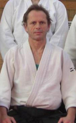

    <div class="container">
        <div class="row">
            <div class="col-lg-8 col-lg-offset-2 col-md-10 col-md-offset-1">
<h3>Neil Blacknell</h3>
<br>
<div class="shell">
<p padding-left="10px">Neil began Aikido in 1983. In 1984, he moved to Japan, where he remained for 14 years, to study at the World Aikido 
Headquarters, Hombu dojo. Blacknell Sensei received his 3rd dan 
from the Second Doshu, Kisshomaru Ueshiba, and his 5th dan from 
the current Doshu, Moriteru Ueshiba. </p>
<p>
Since 1999, he has lived in Edinburgh, where he founded Azami-Kai. 
Neil regularly visits Japan to continue his studies.</p>
</div>
</div>
</div>
</div>